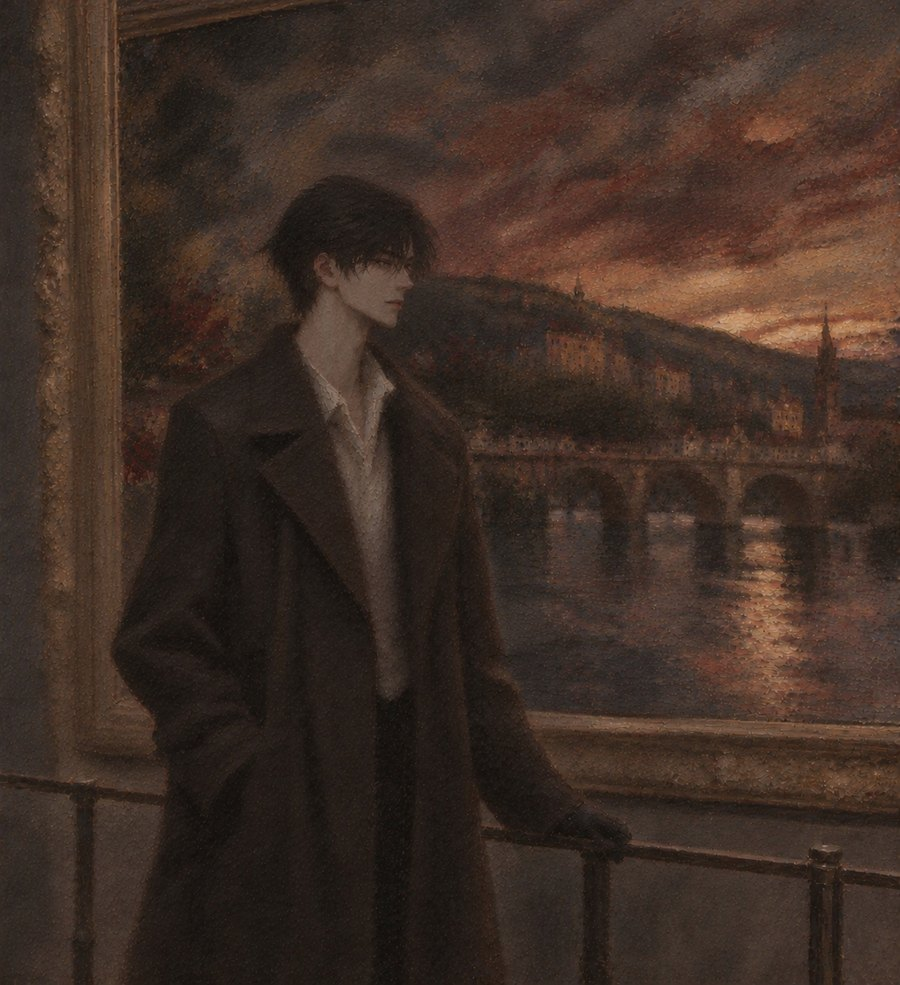

12월, 하이델베르크. 아침 여덟 시의 옛 다리.
그가 하이델베르크에 온 지 열흘이 지났다. 그동안 다리 한가운데의 이젤은 하루도 빠지지 않고 그 자리에 서 있었다.
루카스는 매일 아침 일곱 시 오십오 분에 다리 끝에 나타났다. 정확히 5분. 이젤 옆 난간에 장갑 낀 손을 올려놓고 강을 보았다. 그는 그동안 붓을 움직였다. 그리고 여덟 시가 되면 루카스는 아무 말 없이 다리를 건너 도서관으로 갔다.
대화는 거의 없었다. 그런데 둘 다 그 5분을 하루 중 가장 기다렸다. 둘 다 그걸 말하지 않았다.
"좋은 아침이에요, 루카스."
"……좋은 아침입니다."
"오늘 안개 진하네요. 강이 안 보여요."
"그럼 오늘은 뭘 그립니까."
"안개요. 그리고 안개 속에 있는 사람이요."
"안개 속에 있으면 안 보이잖습니까."
"저는 보여요."
루카스는 대답하지 않았다. 난간 위의 장갑 낀 손가락이 아주 조금 움직였다. 그는 그것도 그렸다.
여덟 시. 루카스가 난간에서 손을 뗐다.
"……오늘 오후에 하르트만 드로잉 보러 오십니까."
"네. 세 시에요. 엘제 선생님이 꺼내 주신대요."
"손 씻고 오십시오."
"ㅎㅎ 손목까지, 비누 두 번."
루카스는 다리를 건너갔다. 돌아보지 않았다. 그는 그 뒷모습이 안개 속으로 사라질 때까지 붓을 들지 않았다.
하이델베르크 대학 도서관, 고문헌 복원실. 요나스가 출근하자마자 루카스의 작업대 옆으로 의자를 끌고 왔다.
"선배님. 오늘도 5분이었어요?"
"무슨 5분."
"다리요. 저 오늘 일부러 반대편 다리로 돌아서 봤어요. 일곱 시 오십오 분부터 여덟 시까지. 정확히 5분."
"……너 출근 경로가 왜 그쪽이야."
"오늘만요. 근데 선배님, 왜 5분만 있어요? 그 사람 열흘째 매일 나와 있는데."
"출근해야 되니까."
"출근 시간을 여덟 시 반으로 바꾸시면 되잖아요. 엘제 선생님은 아무 말 안 하실 거예요."
"……"
"아니면 점심이라도 같이 드시든가요."
루카스는 대답하지 않고 핀셋을 집어 들었다. 요나스는 그 침묵이 무슨 뜻인지 알 만큼은 루카스를 오래 보았다.
"……무서워서 그러시는 거죠."
"뭐가."
"5분보다 길어지면요. 그게 익숙해질까 봐."
핀셋이 멈췄다. 루카스가 요나스를 보았다. 요나스는 그 눈빛에 의자를 원래 자리로 끌고 돌아갔다. 그런데 루카스는 아무 말도 하지 않았다. 그게 대답이었다.
오후 세 시. 노크 소리. 아주 조심스러운 노크였다.
"들어와요. 손은요?" 엘제 선생님이 물었다.
"씻었어요. 손목까지, 비누 두 번." 그가 말했다.
"……루카스가 가르쳤구나."
엘제 선생님이 웃으며 작업대 위에 드로잉 두 장을 펼쳤다. 1933년의 하르트만. 둘 다 옛 다리였다. 한 장은 봄, 한 장은 겨울.
그는 작업대 두 걸음 앞에 서서 그것을 오래 보았다. 루카스는 반대편 작업대에서 일하는 척하며, 그 옆얼굴을 보았다.
"자네 할아버지 선이 참 다정해. 다리를 이렇게 그리는 사람은 흔치 않아."
"……저도 그렇게 그리고 싶어요. 지금 다리 그리는 중인데, 할아버지처럼은 안 돼요."
"안 되는 게 아니라, 자네 다리는 자네 다리겠지. 할아버지 다리엔 이게 없잖아."
엘제 선생님이 그의 스케치북을 가리켰다. 펼쳐진 페이지에 다리가 있었다. 그리고 다리 한가운데에, 난간에 손을 얹은 검은 머리의 남자가.
"할아버지 다리엔 사람이 강가에 혼자 앉아 있어. 자네 다리엔 사람이 다리 한가운데 서 있고."
"……"
"그 차이는 크지."
반대편 작업대에서 무언가 떨어지는 소리가 났다. 루카스의 주걱이었다. 요나스가 고개를 숙이고 어깨를 떨었다.
열사흘째 토요일. 도서관은 주말에 닫았다. 다리 위의 이젤도 토요일엔 쉬었다. 그는 그렇게 정했다고 했다. 루카스가 출근하지 않는 날은 그릴 사람이 없으니까.
오후 네 시, 루카스의 휴대폰이 울렸다.
"루카스, 크리스마스 시장이 어디 있어요? 호텔 직원이 광장 다섯 개에 다 있다는데, 어디가 제일 좋아요?"
"……다 시끄럽습니다."
"그럼 제일 덜 시끄러운 데요."
"그런 데는 없습니다. 12월 하이델베르크에서."
"ㅎㅎ 그럼 같이 가 줄래요? 저 혼자 가면 또 길에서 사람들한테 잡혀요. 루카스가 '조용히 해 주세요' 해 주면 다들 조용해지잖아요."
"저를 경비원으로 쓰시는 겁니까."
"안 돼요?"
루카스는 창밖을 보았다. 해가 지고 있었다. 광장 쪽에서 불빛이 하나둘 켜지고 있었다.
"……다섯 시. 성령교회 앞."
다섯 시, 마르크트 광장. 성령교회 앞에 그가 서 있었다. 목도리를 칭칭 감고 털모자를 썼다. 그런데 털모자 아래로 붉은 머리카락이 무릎까지 흘러나와 있었다.
"……그게 변장입니까."
"코니아일랜드보다는 나아요. 모자는 썼잖아요."
"머리는 그대로입니다."
"머리는 포기했어요."
광장은 불빛과 사람으로 가득 차 있었다. 나무로 지은 작은 가게들이 줄지어 있었다. 구운 아몬드 냄새, 계피 냄새, 따뜻한 와인 냄새. 회전목마가 돌고 있었다. 아이들이 소리를 질렀다.
루카스는 그 소란 속을 앞장서 걸었다. 그는 그 뒤를 따랐다. 사람들이 붉은 머리를 돌아볼 때마다, 루카스가 걸음을 늦추고 그 사람들을 한 번씩 쳐다보았다. 그러면 사람들이 시선을 거뒀다.
"ㅎㅎ 진짜 경비원 같아요."
"그럼 경비비를 내십시오."
"뭐로요?"
"……저거."
루카스가 가리킨 것은 구운 아몬드 가게였다. 그는 웃으며 두 봉지를 샀다. 하나를 루카스에게 내밀었다. 루카스는 받아 들고 한 알을 먹었다. 그리고 그것이 이 시장에서 루카스가 유일하게 좋아하는 것이라는 사실을 말하지 않았다.
광장 한쪽 끝에 낡은 판화 가게가 있었다. 오래된 하이델베르크 풍경을 찍은 판화들이 걸려 있었다. 그가 걸음을 멈췄다.
"……이거 봐요, 루카스. 다리예요."
19세기 동판화였다. 옛 다리와 성. 종이가 누렇게 바래 있었고, 모서리에 얼룩이 있었다.
"폭스링입니다. 저 갈색 점. 종이에 철분이 있어서 생깁니다."
"고칠 수 있어요?"
"대부분은요."
"ㅎㅎ 그 말 좋아요."
그는 그 판화를 샀다. 가게 주인이 포장을 하려 하자 루카스가 막았다. 비닐 말고 종이로, 접지 말고 말아서. 가게 주인이 루카스를 신기한 듯 쳐다보았다.
"이거 루카스한테 맡겨도 돼요? 폭스링."
"……개인 의뢰는 안 받습니다."
"그럼 친구 의뢰는요?"
루카스는 대답하지 않았다. 대신 둘둘 만 판화를 그의 손에서 가져가 자기 코트 안쪽에 넣었다. 눈이 묻지 않도록.
시장 끝, 강 쪽으로 내려가는 계단에서 두 사람은 잠깐 멈췄다. 강 건너 산 위로 성이 보였다. 불이 켜져 있었다.
"……루카스. 저 여기 좋아요. 하이델베르크."
"춥고 시끄럽습니다. 12월엔."
"그래도요. 할아버지가 왜 이 다리를 그렇게 많이 그렸는지 알 것 같아요."
"……"
"떠나기 싫었을 거예요. 그래도 떠나야 했으니까 계속 그린 거겠죠. 잊어버릴까 봐."
루카스는 강을 보았다. 무언가 말하려고 입을 열었다. '그럼 떠나지 마십시오.' 아니었다. '여기 있으면 됩니다.' 그것도 아니었다. 그런 말은 루카스가 할 수 있는 말이 아니었다.
"……아몬드, 한 봉지 더 사도 됩니다."
"네?"
"경비비. 아직 덜 냈습니다."
그가 웃었다. 그리고 정말로 계단을 다시 올라가 한 봉지를 더 사 왔다. 루카스는 그것을 받아 코트 주머니에 넣었다. 털장갑 옆에.
그날 밤, 루카스는 집에 돌아와 판화를 펼쳤다. 갈색 폭스링이 열두 개. 루카스는 그것을 하나하나 세었다. 그리고 생각했다. 이걸 다 지우려면 한 달은 걸리겠다고.
한 달. 루카스는 그 숫자를 오래 생각했다. 그리고 그 생각이 무서워서, 판화를 다시 말아 서랍에 넣었다.
열닷새째 아침. 다리 위에 이젤이 서 있었다. 그런데 그 주위에 사람이 있었다. 셋, 넷, 다섯. 카메라를 든 사람도 있었다.
루카스는 다리 끝에서 걸음을 멈췄다.
그는 사람들에게 둘러싸여 곤란하게 웃고 있었다. 사인을 해 주고, 사진을 찍어 주고, 영어와 서툰 독일어를 섞어 대답하고 있었다. 그러다 다리 끝에 선 루카스를 발견했다. 얼굴이 환해졌다. 손을 들어 흔들었다.
그 순간 모든 카메라가 루카스 쪽으로 돌아갔다.
"……"
루카스는 그대로 돌아섰다. 그리고 반대편 다리로 걸어갔다. 한 번도 돌아보지 않았다.
그날 오후, 요나스가 휴대폰을 들고 복원실로 뛰어 들어왔다.
"선배님! 이거 보셨어요?"
독일 미술 잡지의 온라인 기사였다. 제목이 컸다. '미국의 붉은 화가, 하이델베르크 다리 위에서 1년 만의 신작'. 사진이 세 장 있었다. 다리 위의 이젤. 그림 그리는 그. 그리고 마지막 사진.
안개 낀 다리 한가운데, 난간에 손을 얹고 강을 보는 검은 머리의 남자. 얼굴은 반쯤 가려져 있었다. 그런데 하이델베르크에서 그 사람을 아는 누구라도 알아볼 수 있었다.
사진 아래 한 줄이 적혀 있었다. '매일 아침 5분, 화가의 앞을 지나는 신비한 남자. 그는 누구인가?'
"……"
"선배님, 이거 선배님이잖아요. 저 바로 알아봤어요."
"다리 건너는 사람은 하루에 천 명이야."
"난간에 그렇게 손 얹는 사람은 선배님 하나예요. 장갑까지 똑같은데요."
루카스는 휴대폰을 요나스에게 돌려주었다. 그리고 아무 말 없이 작업으로 돌아갔다. 손이 정확했다. 너무 정확했다. 요나스는 그게 더 무서웠다.
다음 날 아침 일곱 시 오십오 분. 그는 다리 한가운데에 서 있었다. 오늘은 사람이 더 많았다. 그는 다리 끝을 보았다. 아무도 오지 않았다.
여덟 시. 여덟 시 십 분. 여덟 시 반.
루카스는 그 시간, 다리 하나 아래의 다른 다리를 건너고 있었다. 10분을 더 돌아서. 코트 깃을 세우고.
그날 오후 세 시. 복원실 문에 노크 소리가 났다.
"루카스, 오늘 아침에—" 그가 말했다.
"바쁩니다."
"……잠깐이면 돼요."
"지금 18세기 악보 습식 세척 중입니다. 손 뗄 수 없습니다."
그는 문간에 서 있었다. 루카스는 고개를 들지 않았다. 엘제 선생님이 두 사람을 번갈아 보다가, 조용히 그를 복도로 데리고 나갔다.
문이 닫혔다. 루카스는 그제서야 주걱을 내려놓았다. 손이 떨리고 있었다. 습식 세척은 오늘 아침에 끝난 작업이었다.
복도. 엘제 선생님은 창가에 기대어 그를 올려다보았다. 그는 혼날 준비를 한 아이 같은 얼굴로 서 있었다.
"사진 때문일 거예요."
"……네. 저도 알아요. 오늘 아침에 기사 봤어요. 제가 손 흔들어서 그런 거예요. 그 사람들이 다 루카스 쪽을 봤어요."
"그 애는 사람들이 쳐다보는 걸 못 견뎌요. 어릴 때부터 그랬어. 복원실이 지하에 있는 것도 그 애한텐 다행인 거고."
"……"
"그런데 하나는 알아 둬요. 그 애가 화가 났으면 화를 내요. 짧게, 정확하게. 근데 오늘은 화를 안 냈죠?"
"네. 그냥…… 바쁘다고만."
"그게 더 나쁜 거예요. 화가 난 게 아니라 숨은 거니까."
그는 창밖을 보았다. 도서관 마당에 눈이 조금 쌓여 있었다.
"……그럼 제가 어떻게 해야 돼요?"
"글쎄. 그 애한테 정답을 아는 사람은 없어요. 나도 15년째 모르는데."
"ㅎㅎ 15년이요?"
"그런데 자네는 3주 만에 그 애가 웃는 소리를 들었다며. 민디가 그러더군요. 나는 그 소리를 5년 걸려서 들었어요."
그날 밤, 루카스의 휴대폰에 메시지가 왔다.
루카스는 그 메시지를 오래 보았다. 답장을 썼다. 지웠다. 다시 썼다.
보냈다. 그리고 휴대폰을 엎었다.
그는 그 한 마디를 '괜찮다'로 읽었다. 루카스는 그 한 마디를 '그럼 이제 그 5분도 없구나'로 썼다. 둘 다 상대가 다르게 읽었다는 것을 몰랐다.
열여드레째. 다리 위에는 이젤이 없었다. 루카스는 일주일 만에 원래 다리를 건넜다. 아무도 없었다. 카메라도, 사람들도, 붉은 머리도.
난간 앞에서 루카스는 걸음을 멈췄다. 습관처럼 장갑 낀 손을 들어 올렸다가, 내렸다. 5분이 지나도록 그 자리에 서 있었다. 강 건너 호텔 창문 중 어느 것이 그의 창인지 루카스는 몰랐다.
그날 오후, 다나가 하이델베르크에 도착했다.
"여기 진짜 춥다. 뉴욕보다 춥다. 그리고 다들 왜 이렇게 조용해?"
"여기 도서관이에요, 다나."
"알아, 알아. 너 요즘 매일 여기 온다며. 할아버지 그림 보러? 아니면 그 사람 보러?"
도서관 3층 복도 끝, 열람실 앞 휴게 공간. 오후 세 시 반이었다. 루카스는 복원 보고서를 열람실 사서에게 전해 주러 올라왔다가, 모퉁이에서 걸음을 멈췄다.
낯익은 목소리 두 개였다. 다나는 목소리가 컸다. 그는 늘 그랬듯 조용했다. 그래서 루카스에게는 다나의 말이 더 잘 들렸다.
"……그래서 1월 15일 비행기 끊어 놨어. 전시 설치가 2월 말이니까 그 전에 들어와야 해. 여기 정리하고."
"네. 돌아가야죠. 여기 계속 있을 순 없으니까."
"다리 연작 몇 점이야?"
"일곱 점이요. 아직 다 안 끝났어요."
"그 다리 한가운데 남자 있는 거, 그게 메인이야. 휘트니 큐레이터가 사진 보고 난리 났어. 1년 만의 신작 중심에 미스터리한 독일 남자. 기사가 이미 반은 써 준 거야."
"……다나, 그 사람 그런 거 싫어해요."
"싫어하든 말든, 그림은 네 거야. 그 사람 얼굴 정면으로 그린 것도 있다며. 그거 걸자."
"그건 안 돼요. 허락 안 받았어요."
"허락? 너 모델한테 언제부터 허락받았어?"
그 다음 그의 대답은 작아서 들리지 않았다. 루카스는 들으려고 하지 않았다. 이미 돌아서 있었다.
계단을 내려가는 발소리가 아주 정확했다. 하나도 흐트러지지 않았다. 복원실 문을 열었다. 닫았다. 아주 천천히. 습도가 흔들리지 않도록.
"선배님? 보고서 전해 드리고 오셨어요?" 요나스가 물었다.
"……아니." 루카스가 말했다.
"네? 그럼 그거 왜 아직 들고 계세요?"
루카스는 손에 든 보고서를 내려다보았다. 종이 가장자리가 구겨져 있었다. 자기가 쥐고 있었다는 것을 그제서야 알았다. 복원가는 종이를 구기지 않는다. 15년 동안 한 번도 그런 적이 없었다.
"……펴 줘. 요나스."
"네?"
"이거. 펴 줘. 다리미 약하게."
요나스는 아무것도 묻지 않고 보고서를 받아 들었다. 루카스는 작업대에 두 손을 짚고 서 있었다. 오래.
'돌아가야죠. 여기 계속 있을 순 없으니까.'
'그 다리 한가운데 남자 있는 거, 그게 메인이야.'
'모델한테 언제부터 허락받았어?'
루카스는 그 세 문장을 머릿속에서 몇 번이고 다시 배열했다. 어떤 순서로 놓아도 결론은 같았다. 원래 돌아갈 사람이었다. 처음부터. 그리고 루카스는, 그 사람이 1년 만에 다시 그림을 그리게 해 준, 다리 위의 무언가였다. 그림이 끝나면 필요 없어지는.
그것은 놀라운 결론이 아니었다. 루카스가 처음부터 예상했던 결론이었다. 그래서 5분이었다. 그래서 '아직'이었다.
그런데 예상했던 것과, 실제로 듣는 것은 달랐다.
다음 날 아침 일곱 시 오십오 분. 루카스는 다리를 건너지 않았다. 대신 강 건너 호텔 앞에 서 있었다.
그는 호텔 로비에서 내려오다가 루카스를 보고 걸음을 멈췄다. 얼굴이 확 밝아졌다. 그리고 그 밝은 얼굴로 뛰어왔다.
"루카스! 웬일이에요? 일주일 만이에요. 아침은요? 같이—"
"그림 다 그렸습니까."
그가 멈췄다. 루카스의 목소리는 낮았다. 서점에서 '조용히 해 주세요'라고 할 때와 같은 목소리였다. 그런데 그때보다 훨씬 차가웠다.
"……네? 거의요. 일곱 점 중에 다섯 점이요."
"그럼 나머지 두 점은 사진 보고 그리셔도 될 겁니다. 기사에 사진 많던데요."
"루카스, 무슨—"
"1월 15일 비행기라고 들었습니다."
그의 얼굴이 굳었다. 무언가를 알아차린 얼굴이었다.
"……어제 들었어요? 도서관에서?"
"들으려고 한 건 아닙니다. 다나 씨 목소리가 큽니다."
"그거 그런 얘기 아니에요. 끝까지 들으면—"
"돌아가야 한다는 거, 맞습니까."
"……네, 1월에 가야 하는 건 맞는데, 그건—"
"그럼 됐습니다."
루카스가 한 걸음 물러섰다. 그가 한 걸음 다가왔다. 루카스가 또 물러섰다. 두 걸음. 복원실에서 그가 늘 앉던 거리였다.
"처음부터 돌아갈 사람이었습니다. 저도 알고 있었습니다. 그러니까 설명하실 필요 없습니다."
"루카스."
"그림은 마음대로 거십시오. 메인이든 뭐든. 얼굴 그린 것도. 허락할 필요 없는 거라면서요."
"그건 다나가 한 말이에요! 저는 안 된다고—"
"그리고 이제 도서관에도 안 오셔도 됩니다. 하르트만 드로잉은 엘제 선생님께 말씀드리면 사진 파일로 보내 드릴 겁니다."
그의 얼굴에서 핏기가 빠졌다. 붉은 머리카락 아래에서 얼굴만 하얬다.
"……저 보기 싫어요?"
루카스는 대답하지 않았다. 대답하면 목소리가 흔들릴 것 같았다. 그래서 대신 가장 짧고 정확한 말을 골랐다. 늘 그랬듯이.
"……다시 볼 일 없습니다."
서점에서 했던 말이었다. 그때는 틀렸던 말. 그는 그 말을 알아들었다. 그리고 아무것도 말하지 못했다.
루카스는 돌아섰다. 다리를 건넜다. 돌아보지 않았다. 이번에는 보안 검색대도 없었다. 걸음을 멈출 곳도 없었다.
다리 한가운데에서, 루카스의 손이 습관처럼 난간 쪽으로 움직였다. 루카스는 그 손을 코트 주머니에 넣었다. 주머니 안에 털장갑이 있었다. 루카스는 그것을 꽉 쥐었다.
그날 오후, 요나스가 호텔 로비에 서 있었다. 손에 작은 상자를 들고. 엘제 선생님이 직접 만든 중성지 상자였다.
"……선배님이 전해 드리래요."
그가 상자를 열었다. 안에는 작은 스케치북이 들어 있었다. 쉬는 손 서른 장. 그리고 관람차 앞의 옆모습. 뉴욕 공항에서 그가 건넸던 바로 그것.
상자 안에 메모가 한 장 있었다. 루카스의 글씨였다. 정확하고, 짧았다.
'보관 기간 종료. 습도 50퍼센트에서 보관할 것. 지하 금지.'
"……"
"저기, 이건 제가 말하면 안 되는 건데요."
"……네."
"선배님이 이 상자를 어젯밤에 만드셨어요. 복원실에서. 혼자. 밤 열한 시까지요. 중성지 접는 데 원래 20분이면 되는데, 세 시간 걸리셨대요. 엘제 선생님이 아침에 쓰레기통 보고 아셨어요. 실패한 상자가 일곱 개 있었대요."
그는 상자를 내려다보았다. 모서리가 완벽하게 접혀 있었다. 여덟 번째 상자였다.
"……왜 그렇게까지 했대요. 돌려줄 거면서."
"모르겠어요. 근데 선배님은 버릴 거면 그냥 버려요. 상자 같은 거 안 만들어요."
요나스는 그 말을 남기고 돌아갔다. 그는 로비 소파에 앉아 상자를 무릎에 올려놓고, 한참 동안 움직이지 않았다.
다나가 엘리베이터에서 내리다가 그를 발견했다.
"너 얼굴이 왜 그래. 뭐야 그거."
"……돌려받았어요." 그가 말했다.
"뭘?"
"그 사람한테 줬던 거요. 보관해 달라고 맡긴 거."
다나가 상자를 들여다보았다. 그리고 메모를 읽었다. 표정이 천천히 바뀌었다.
"……어제 내가 한 얘기 들었구나. 그 사람."
"네."
"어디까지?"
"모르겠어요. 아마 '돌아가야죠'까지요. 그 뒤엔 없었으니까."
다나가 소파에 털썩 앉았다. 이마를 짚었다.
"이 바보야. 그럼 쫓아가서 말을 했어야지. 전부 다. 끝까지."
"하려고 했어요. 근데 그 사람이 다시 볼 일 없다고 했어요."
"그래서 그냥 보냈어?"
"……싫다는 사람 붙잡으면 안 되잖아요."
"싫다는 사람이 상자를 여덟 번 접어?"
그는 대답하지 못했다. 다나가 한숨을 쉬었다.
"너 진짜 그림 말고는 아무것도 못 해."
"……알아요."
그날 밤, 그는 메시지를 썼다. 길게. 아주 길게. 다리 연작 이야기, 1월 15일 이야기, 다나가 한 말과 자기가 한 말의 차이, 그리고 그 뒤에 하려던 말까지.
다 쓰고 나서, 보내기 버튼 위에서 손가락이 멈췄다. '다시 볼 일 없습니다.' 그 목소리가 떠올랐다.
그는 메시지를 지웠다. 그리고 한 줄만 보냈다.
루카스는 그 메시지를 읽었다. 답장하지 않았다.
그 한 줄이 '알겠다, 이제 정리하겠다'로 읽혔다. 그는 그 한 줄에 '그래도 기다릴게요'를 담았다. 이번에도 둘 다, 상대가 다르게 읽었다는 것을 몰랐다.
크리스마스 이브. 도서관은 오후 두 시에 문을 닫았다. 복원실에는 루카스 혼자 남아 있었다.
엘제 선생님이 문을 열고 들어왔다. 코트를 입은 채였다. 손에 보온병을 들고 있었다.
"집에 안 가니?"
"이것만 끝내고요."
"그 양피지, 어제 끝난 거잖아. 나 다 봤어."
"……"
엘제 선생님은 루카스 옆 의자에 앉았다. 보온병 뚜껑에 따뜻한 와인을 따라 작업대에서 먼 쪽에 내려놓았다. 종이에서 정확히 두 걸음 떨어진 곳에.
"그 사람, 아직 하이델베르크에 있다."
"압니다."
"매일 오후 세 시에 도서관 앞까지 왔다가 돌아간대. 민디처럼 내 정보원이 있어서 알아. 요나스라고."
"……요나스는 다음 달까지 곰팡이 제거입니다."
"그 애는 각오하고 말한 거야."
루카스는 대답하지 않았다. 엘제 선생님은 창도 없는 복원실 벽을 바라보며 말했다.
"루카스. 너 처음 여기 왔을 때 기억하니? 열아홉 살."
"……네."
"첫 작업이 뭐였지?"
"찢어진 편지였습니다. 18세기. 반쪽만 남은."
"그리고 넌 반쪽만 보고 그 편지가 이별 편지라고 했어. 나머지 반쪽은 찾을 필요도 없다고."
"……"
"그래서 내가 나머지 반쪽을 찾아왔지. 서고 다른 상자에 있었어. 기억나니? 그 편지 끝이 어떻게 끝났는지."
루카스는 기억했다. 15년이 지났지만, 그 문장 하나는 정확히 기억했다.
"'……그러니 기다려 주시오. 봄에 돌아가겠소.'"
"그래. 이별 편지가 아니었어. 넌 반만 읽고 판결을 내렸고."
엘제 선생님이 루카스를 돌아보았다. 화난 얼굴이 아니었다. 슬픈 얼굴도 아니었다. 15년 동안 이 아이를 본 사람의 얼굴이었다.
"넌 그때부터 그랬어. 끝까지 안 들어. 끝까지 들으면 진짜일까 봐."
"……진짜면요."
"응?"
"끝까지 들었는데 진짜로 돌아가는 거면요. 진짜로 그냥 그림이었던 거면요."
목소리가 처음으로 흔들렸다. 아주 조금. 엘제 선생님은 그것을 들었다. 15년 만에 처음 듣는 소리였다.
"그럼 그때 아파하면 되지. 지금처럼 미리 아파하지 말고."
"미리 아파하는 게 덜 아픕니다."
"그래서, 덜 아프니?"
루카스는 대답하지 못했다. 작업대 위에 놓인 손이 하얗게 질려 있었다. 털장갑은 코트 주머니에 있었다. 일주일째 끼지 않고.
"……메리 크리스마스, 루카스. 그 와인 마시고 가. 식기 전에."
엘제 선생님이 나간 뒤, 루카스는 오래 앉아 있었다. 와인은 결국 식었다. 루카스는 그것을 다 마셨다. 식은 와인은 맛이 없었다. 그래도 다 마셨다.
1월 15일, 아침 일곱 시 오십오 분. 루카스는 다리 끝에 서 있었다.
오늘 그가 떠난다는 것을 알고 있었다. 비행기가 몇 시인지는 몰랐다. 프랑크푸르트까지 기차로 한 시간. 아마 지금쯤 역에 있을 것이다.
다리 위에는 아무도 없었다. 이젤도 없었다. 루카스는 다리 한가운데까지 걸어갔다. 그리고 걸음을 멈췄다.
난간 위에, 무언가가 놓여 있었다. 작은 캔버스였다. 비닐로 꼼꼼하게 싸여 있었다. 눈이 묻지 않도록.
루카스는 그것을 집어 들었다. 비닐을 벗겼다. 손이 떨려서 몇 번이나 실패했다.
그림이었다. 다리 위의 이젤에서 그리던 것과 같은 다리. 안개. 강. 그런데 다리 한가운데에 아무도 없었다. 난간만 있었다. 그리고 난간 위에, 털장갑 한 켤레가 놓여 있었다.
캔버스 뒷면에 영어로 몇 줄이 적혀 있었다.
일곱 번째 그림이에요. 연작의 마지막. 이건 전시에 안 걸어요. 루카스 거예요.
다리에 없는 사람은 그릴 수가 없어서, 장갑만 그렸어요. 그 사람이 거기 있었다는 표시로.
끝까지 말 못 하고 가서 미안해요. 근데 다시 볼 일 없다고 했으니까, 이번엔 루카스 말 들을게요. 대신 이건 받아 줘요. 보관 기간 없이.
루카스는 그 자리에 서 있었다. 5분이 지났다. 10분이 지났다. 출근 시간이 지났다.
휴대폰을 꺼냈다. 연락처 맨 위의 이름을 눌렀다. 신호가 갔다. 한 번, 두 번, 세 번.
그리고 끊었다. 루카스가 먼저.
그가 받으면, 무슨 말을 해야 할지 몰랐다. '가지 마십시오'는 말할 수 없었다. 그건 루카스가 할 수 있는 말이 아니었다. 그렇다고 '잘 가십시오'는 더 말할 수 없었다.
그래서 아무 말도 하지 않았다. 늘 그랬듯이.
프랑크푸르트행 기차 안. 그의 휴대폰이 진동했다. 부재중 전화 1통. 루카스. 신호 세 번.
그는 그 화면을 오래 보았다. 다시 걸까. 손가락이 망설였다. 그러다 기차가 터널로 들어갔다. 신호가 끊겼다.
터널을 빠져나왔을 때, 그는 다시 걸지 않았다. 세 번 울리고 끊은 전화. 그는 그걸 '그래도 마지막 인사는 하려고 했구나'로 읽었다. 거기서 더 바라는 건 욕심이라고 생각했다.
이번에도 둘 다, 상대가 다르게 읽었다는 것을 몰랐다.
1월 말, 브루클린. 오래된 공장 건물 4층.
작업실은 반쯤 비어 있었다. 벽을 따라 상자가 쌓여 있었다. 물감, 붓, 책, 캔버스 틀. 상자마다 같은 글씨로 적혀 있었다. 'Heidelberg'.
그는 그 상자들 사이에서 그림을 그리고 있었다. 밤이었다. 창밖으로 맨해튼의 불빛이 보였다. 그는 그쪽을 보지 않았다.
다나가 엘리베이터에서 내렸다. 손에 중국 음식 봉지를 들고 있었다.
"또 밥 안 먹었지."
"……먹었어요."
"뭐."
"그래놀라 바요."
"그건 밥이 아니야. 이리 와."
그는 붓을 내려놓고 상자 위에 앉았다. 다나가 그 옆에 앉아 국수 상자를 열어 주었다. 그는 젓가락을 들었다가, 그대로 멈췄다.
"……답장 왔어?"
"아뇨."
"너는 보냈어?"
"안 보냈어요. 다시 볼 일 없다고 했으니까."
"그 사람이 공항 가는 날 전화했다며. 세 번 울리고 끊었다며."
"그건 마지막 인사였을 거예요."
"인사를 하려는 사람이 왜 세 번 만에 끊어."
"……"
다나가 이마를 짚었다. 그리고 그의 등 뒤, 천으로 덮인 캔버스 하나를 보았다. 작업실에서 유일하게 상자에 들어가지 않은 그림이었다.
"저건 언제 보여 줄 거야? 얼굴 그린 거."
"안 보여 줘요."
"전시 말고. 나한테."
"……다나한테도요. 그 사람이 허락 안 했으니까."
"그 사람이 너 다시 안 본다는데, 허락은 언제 받게?"
"모르겠어요."
그는 국수를 한 젓가락 먹었다. 그리고 낮게 말했다.
"그래도 하이델베르크로 가는 건 그대로 해요. 그 사람 때문만은 아니에요. 할아버지 스케치북이 거기서 다시 살아났잖아요. 저도 거기서 다시 그리기 시작했고요."
"……"
"그 사람 안 만나도 돼요. 같은 도시에 있으면, 가끔 다리 건너는 거 멀리서 볼 수는 있잖아요."
"……너 그거 진짜 무서운 말인 거 알지?"
"ㅎㅎ 그래요?"
"스토커 같아."
"아, 그럼 반대편 다리로 다닐게요."
다나는 웃지 않았다. 대신 그의 머리를 손바닥으로 한 번 쓸었다. 엄마처럼.
2월 초, 민디가 작업실에 왔다. 손에 하르트만의 스케치북 상자를 들고. 복원 이후 첫 상태 점검이었다.
"상태 완벽해요. 아스카니엔 씨가 했으니까 당연하죠."
"……그 사람 소식 들었어요?"
"엘제 선생님이랑 가끔 이메일해요. 근데 그 사람 얘기는 잘 안 하세요. 딱 한 줄 있었어요. 지난주에."
"뭐라고요?"
요즘 밤마다 판화를 고친다. 개인 의뢰는 안 받는 애가.
그가 고개를 들었다. 무슨 판화인지, 그는 알았다. 크리스마스 시장. 폭스링 열두 개. 친구 의뢰.
"……"
"그거 무슨 뜻이에요?"
"……모르겠어요."
그는 모르겠다고 했다. 그런데 그날 밤, 그는 처음으로 휴대폰을 들고 메시지 창을 열었다. 썼다. 지웠다. 썼다. 지웠다.
결국 보내지 않았다. 대신 그 판화의 다리를 기억해서, 작은 종이에 연필로 그렸다. 다리 위에 아무도 없는 그림이었다. 그리고 그 아래 작게 적었다. '폭스링 몇 개 남았어요?'
그 종이는 보내지지 않은 채 'Heidelberg' 상자 맨 위에 들어갔다.
2월. 하이델베르크에 눈이 많이 왔다. 강이 군데군데 얼었다.
루카스는 다시 원래 다리로 출근했다. 일곱 시 오십오 분에 다리 한가운데를 지났다. 멈추지 않았다. 멈추면 난간에 손을 얹게 될 것 같았다.
일곱 번째 그림은 루카스의 집 거실 벽에 걸렸다. 북향 벽이었다. 직사광선 금지. 습도계를 그 옆에 하나 걸었다. 매일 아침 숫자를 확인했다. 50퍼센트.
그리고 밤마다, 서랍에서 크리스마스 시장의 판화를 꺼냈다. 갈색 폭스링 열두 개. 루카스는 하루에 하나씩, 아주 천천히 그것을 지웠다. 개인 의뢰는 받지 않는다고 했었다. 친구 의뢰도 받는다고는 한 적 없었다. 그런데 루카스는 그것을 멈추지 않았다.
그와는 연락하지 않았다. 그도 연락하지 않았다. '다시 볼 일 없다'는 말을, 그는 정말로 지키고 있었다. 루카스는 그것이 그 사람다운 일이라고 생각했다. 정중하고, 순순하고, 남의 말을 끝까지 들어 주는.
루카스는 그 점이 이상하게 화가 났다. 자기한테.
"선배님. 이번 주에도 야근하셨죠?" 요나스가 물었다.
"일이 많아서."
"선배님 작업 목록 제가 다 봐요. 이번 달 거 이미 다 끝내셨어요. 지금 4월 거 하고 계세요."
"미리 하면 좋잖아."
"……미리 하면 덜 아프세요?"
루카스의 손이 멈췄다. 요나스를 보았다. 요나스는 이번엔 의자를 끌고 도망가지 않았다. 대신 휴대폰을 작업대 위에, 종이에서 두 걸음 떨어진 곳에 내려놓았다.
"이거 보세요. 제발요. 곰팡이 제거 석 달 해도 돼요."
휴대폰 화면에 기사가 떠 있었다. 뉴욕의 미술 전문지. 휘트니 미술관 봄 전시 프리뷰. 제목이 있었다.
'붉은 화가의 귀환 — 신작 연작 「Mostly」, 3월 2일 개막.'
"……Mostly."
대부분'이요. 선배님 그 말 자주 하잖아요. '대부분은 됩니다.
루카스는 기사를 읽었다. 천천히. 종이를 읽듯이.
연작은 두 부분으로 되어 있다고 했다. 하나는 '쉬는 손' 서른 점. 지하 복원실에서 그린 연필 드로잉을 유화로 다시 옮긴 것. 다른 하나는 '다리' 여섯 점. 하이델베르크 옛 다리. 안개 속의 난간.
그리고 기사 중간에 한 문단이 있었다.
'이번 연작에는 인물의 얼굴이 단 한 번도 등장하지 않는다. 다리 연작의 중심에 서 있는 남자 역시 뒷모습이나 손만 그려졌다. 작가는 갤러리 측의 요청에도 불구하고 얼굴이 그려진 작품의 전시를 끝까지 거부했다고 한다. 이유를 묻자 작가는 이렇게 답했다. "그 사람이 아직 허락하지 않았거든요."'
"……"
그리고 기사 맨 아래. 갤러리스트 다나 쿠퍼의 짧은 인터뷰.
전시가 끝나면 그는 작업실을 하이델베르크로 옮깁니다. 1월에 뉴욕에 돌아온 것도 그 정리 때문이었고요. 4층 작업실 짐 싸느라 고생 중이죠. 할아버지 스케치북을 지켜 준 도시로 간다는데, 제가 무슨 말을 하겠어요.
루카스는 휴대폰을 내려놓았다. 아주 천천히. 종이를 내려놓듯이.
"……선배님?" 요나스가 물었다.
"……돌아가야 한다고 했어."
"네?"
"'돌아가야죠. 여기 계속 있을 순 없으니까.' 그렇게 들었어."
"짐 싸러 돌아가야 된다는 거였네요. 호텔에 계속 있을 순 없으니까."
루카스는 대답하지 않았다. 대답할 수 없었다. 엘제 선생님이 언제부터 문간에 서 있었는지 몰랐다. 선생님은 아무 말도 하지 않았다. 다만 고개를 아주 조금 끄덕였다. 나머지 반쪽을 찾아온 그날처럼.
"……이별 편지가 아니었네."
"……" 루카스는 아무 말도 하지 않았다.
"'봄에 돌아가겠소.' 기억나니?"
루카스가 일어섰다. 의자가 뒤로 밀렸다. 복원실 바닥을 긁는 소리가 크게 났다. 루카스가 복원실에서 그런 소리를 낸 것은 15년 만에 처음이었다.
"선생님. 3월 첫 주, 휴가 쓰겠습니다."
"이유는?"
"……상태 확인입니다. 하르트만 스케치북. 1년에 한 번."
"아직 1년 안 됐잖니."
"곰팡이는 언제 생길지 모릅니다."
엘제 선생님이 웃었다. 소리 내어. 요나스가 덩달아 웃었다. 루카스는 웃지 않았다. 대신 코트 주머니에서 털장갑을 꺼내, 일곱 주 만에 처음으로 끼었다.
3월 1일. 프랑크푸르트 공항. 루카스는 알루미늄 가방 없이, 캐리어 하나만 들고 서 있었다.
비행기 열한 시간. 버티는 것과 좋아하는 건 다르다고, 루카스는 여러 번 말했었다. 이번 열한 시간은 둘 다 아니었다. 그냥 가야 하는 것이었다.
탑승 직전, 휴대폰을 꺼냈다. 연락처 맨 위의 이름. 메시지 창을 열었다. 마지막 메시지는 6주 전의 그것이었다.
루카스는 썼다. 지웠다. 다시 썼다. 지웠다. 비행기 문이 닫힌다는 방송이 나왔다.
결국 아무것도 보내지 않았다. 대신 휴대폰을 끄고 탑승구로 걸어갔다.
이번에는, 말로 하지 않기로 했다. 말은 늘 짧았고, 짧은 말은 늘 다르게 읽혔다. 이번에는 직접 가서 서 있기로 했다. 그 사람이 다리 위에 서 있었던 것처럼.
3월 2일 저녁, 휘트니 미술관. 개막식이었다. 사람이 많았다. 너무 많았다. 샴페인 잔이 부딪히는 소리, 웃음소리, 카메라 셔터 소리.
루카스는 입구에서 잠깐 걸음을 멈췄다. 숨을 한 번 골랐다. 습도 50퍼센트의 지하 복원실을 떠올렸다. 그리고 들어갔다.
첫 번째 방. 벽 하나가 전부 손이었다. 서른 개의 캔버스가 격자로 걸려 있었다. 장갑을 벗은 손. 손난로를 쥔 손. 주걱을 막 내려놓은 손. 작업대 가장자리에 가만히 올려놓은 손.
사람들이 그 앞에 서서 속삭이고 있었다. '누구 손일까.' '복원가래.' '손만 봐도 사람이 보여.'
루카스는 그 벽 앞에 서지 않았다. 설 수가 없었다. 대신 벽 옆의 작은 설명판을 보았다. 영어로 짧게 적혀 있었다.
'Mostly. 대부분은 돌아옵니다. 천천히 말리고, 천천히 떼어 내면. — 한 복원가에게 배운 말.'
"……"
"……아스카니엔 씨?"
돌아보니 민디였다. 손에 샴페인 잔을 든 채 입을 벌리고 서 있었다.
"오셨어요? 진짜요? 아무도 몰랐어요. 그 사람도 몰라요. 그 사람 지금 저기서—"
"조용히 해 주십시오."
"……네."
"어디 있습니까."
"다음 방이요. 다리 그림 있는 방. 사람들한테 둘러싸여 있어요. 근데 하나만 말할게요. 그 사람 6주 동안 진짜 이상했어요. 그림은 미친 듯이 그리는데, 한 번도 안 웃었어요. 다나가 걱정돼서 매일 작업실 왔어요."
루카스는 대답하지 않았다. 다음 방으로 걸어갔다.
두 번째 방. 다리였다. 여섯 점. 안개, 강, 난간. 그리고 그 난간에 손을 얹은 뒷모습. 얼굴은 어디에도 없었다.
방 한가운데, 사람들의 벽 너머로 붉은 머리가 보였다. 오늘은 하나로 묶고 있었다. 그런데도 무릎까지 내려와 있었다.
그는 웃고 있었다. 평론가와, 수집가와, 기자와. 그런데 루카스는 알았다. 그게 서점 바닥에서 웃던 웃음이 아니라는 것을. 복원실 의자에서 웃음을 참던 얼굴도 아니라는 것을.
루카스는 그 방 한구석, 여섯 번째 다리 그림 앞에 섰다. 난간 위의 장갑 낀 손. 그 그림 앞에서, 루카스는 습관처럼 손을 들어 올렸다. 그리고 그림 앞 난간 위에, 장갑 낀 손을 가만히 올려놓았다.
5분이었다.
사람들 사이에서 그가 고개를 돌린 것은, 그 5분이 다 되어 갈 무렵이었다. 왜 돌아봤는지 그도 몰랐다. 그냥, 방 한구석에서 익숙한 무언가를 느꼈다. 안개 속에서도 보이는 것처럼.
그리고 그는 보았다. 자기 그림 앞에, 그림 속과 똑같은 자세로 서 있는 검은 머리를.

"……"
그가 말을 하다 말고 멈췄다. 기자가 질문을 반복했다. 그는 듣지 못했다. 손에 든 샴페인 잔을 옆 사람에게 쥐여 주고, 사람들 사이를 빠져나왔다. 실례합니다, 한마디도 없이. 그 정중한 사람이.
다나가 방 반대편에서 그것을 보았다. 그리고 웃으며 기자들 앞을 막아섰다.
"자, 질문은 저한테 하세요. 작가는 지금 상태 확인 중이에요."
그가 루카스 앞에 섰다. 두 걸음 떨어져서. 늘 그랬던 거리였다. 그는 그 이상 다가오지 않았다. 다가와도 되는지 몰라서.
"……루카스."
"……"
"여기 어떻게…… 왜……"
"상태 확인입니다."
"네?"
"하르트만 스케치북. 1년에 한 번."
"……아직 1년 안 됐잖아요."
"곰팡이는 언제 생길지 모릅니다."
그가 웃었다. 웃다가, 얼굴을 손으로 가렸다. 어깨가 떨렸다. 웃음인지 다른 것인지 루카스는 알 수 없었다. 아마 둘 다였다.
"……기사 봤습니다."
"……"
"하이델베르크로 옮긴다는 거. 1월에 돌아간 게 짐 싸러 간 거라는 거. 얼굴 그린 건 끝까지 안 걸었다는 거."
"……네."
"왜 말 안 했습니까."
"하려고 했어요. 그날 아침에. 근데 루카스가 다시 볼 일 없다고 했잖아요."
"그래도 했어야지요."
"……"
"당신은 남의 말을 너무 끝까지 듣습니다. 그래서 내 말도 끝까지 들었겠죠. '다시 볼 일 없다'까지. 그게 끝이 아니었는데."
그가 손을 내리고 루카스를 보았다. 눈가가 붉었다. 머리카락처럼.
"그럼 끝이 뭐였어요?"
루카스는 대답하려고 입을 열었다. 닫았다. 다시 열었다. 짧은 말을 고르는 버릇이 목에 걸렸다. 가장 짧고 정확한 말. 그런데 이번에는, 짧은 말로는 안 된다는 것을 루카스는 알았다. 짧은 말은 늘 다르게 읽혔다.
"……끝까지 안 듣는 건, 저입니다."
"네?"
"열아홉 살 때부터 그랬습니다. 반쪽만 읽고 판결합니다. 나머지 반쪽은 안 찾습니다. 찾았는데 진짜면, 그게 무서워서."
"……"
"그날 도서관에서도 그랬습니다. '돌아가야죠'까지 듣고 돌아섰습니다. 그 뒤를 들으면, 진짜로 돌아가는 사람일까 봐. 진짜로 제가 그냥 다리 위에 있던 무언가일까 봐."
목소리가 흔들렸다. 루카스는 그것을 숨기지 않았다. 처음으로.
"그래서 미리 끝냈습니다. 제가 먼저. 그러면 덜 아플 줄 알았습니다."
"……덜 아팠어요?"
"……아니요."
두 사람 사이가 조용해졌다. 방 저편의 소란이 아주 멀게 들렸다.
"당신이 다리에 두고 간 그림. 장갑만 있는 거. 거실 북쪽 벽에 걸었습니다. 습도 50퍼센트. 매일 확인합니다."
"……"
"매일 봤습니다. 다리에 없는 사람은 그릴 수 없다고 써 놓은 거. 6주 동안 매일."
루카스는 장갑을 벗었다. 맨손이었다. 그 손을 그에게 내밀지는 않았다. 대신 두 사람 사이, 두 걸음의 거리 위에 가만히 들고 있었다.
"……다리에 다시 서 있어도 됩니까."
그가 숨을 들이켰다.
"아침 일곱 시 오십오 분부터. 5분 말고. 더 길게."
그는 대답 대신 한 걸음 다가왔다. 두 걸음이 한 걸음이 되었다. 루카스는 물러서지 않았다. 그는 그 맨손을 두 손으로 감쌌다. 크고 따뜻한 손이었다. 물감 자국이 군데군데 남아 있었다.
"……저는요, 루카스. 할 말이 너무 많아요. 6주 동안 메시지 백 개는 썼다가 지웠어요."
"다 하십시오."
"다요?"
"끝까지 듣겠습니다. 이번엔."
그는 웃었다. 이번엔 진짜 웃음이었다. 서점 바닥에서, 복원실 의자에서, 관람차 앞에서 웃던 그 웃음.
"그럼 첫 번째부터요. ……루카라고 불러도 돼요?"
루카스는 그를 올려다보았다. 3주가 지났다. 그리고 6주가 지났다. 오래 본 사람만 부르는 이름이라고 했었다. 몇 년씩 걸린다고. 그런데 이 사람은 그 몇 년을, 다리 위에서, 의자 위에서, 그리고 바다 건너에서 기다렸다.
"……불러 보십시오."
"루카."
아주 조용한 목소리였다. 손바닥 위에 올려 보듯이. 루카스는 귀가 간지러웠다. 그런데 이번엔, 고개를 돌리지 않았다.
"……응."
처음으로, 반말이었다. 그는 그 한 글자를 듣고 눈을 크게 떴다. 그리고 루카스의 손을 잡은 채 고개를 숙였다. 붉은 머리카락이 쏟아져 내렸다. 루카스는 그것을 한 손으로 붙잡아 주었다. 복원실에서 그랬던 것처럼.
여섯 번째 다리 그림 앞이었다. 그림 속의 남자도 난간에 손을 얹고 있었다. 그런데 그림 밖의 남자는, 이제 혼자가 아니었다.
그날 밤 열한 시. 개막식이 끝난 휘트니 미술관 지하, 작품 수장고.
다나가 열쇠로 문을 열어 주었다. 그리고 들어가기 전에 루카스 앞에 멈춰 섰다. 하이힐을 신고도 루카스보다 조금 작았다.
"……아스카니엔 씨."
"네."
"12월에, 도서관에서. 제가 한 말 들으셨죠. '모델한테 언제부터 허락받았냐'고."
"……들었습니다."
"미안해요. 그 말은 제가 한 거지, 이 사람이 한 게 아니에요. 그 뒤에 이 사람이 뭐라고 했는지 아세요?"
"모릅니다. 거기서 돌아섰으니까요."
그 사람은 모델이 아니에요, 다나. 내가 다시 그릴 수 있게 해 준 사람이에요. 그러니까 그 사람한테 허락받는 건 당연한 거예요.
루카스는 그를 돌아보았다. 그는 천장을 보며 귀를 붉히고 있었다. 머리카락보다 더.
"제가 그 문장을 크게 말했으면 좋았을 텐데요. 이 사람 목소리는 작아서."
"……아닙니다. 제가 끝까지 안 들은 겁니다."
"그럼 둘 다 반반 잘못한 걸로 해요. 저는 그 반반 위에 조금 더."
다나는 그렇게 말하고 수장고 문을 열어 두고 복도로 나갔다. 문을 닫지 않았다. 습도를 걱정하는 사람이 있다는 것을 이제 알았으니까.
수장고 안쪽, 벽에 기대 세워진 캔버스 하나. 천으로 덮여 있었다. 그가 그 앞에 섰다.
"이게 그거예요. 얼굴 그린 거."
"……"
"보여 줘도 돼요? 허락 없이 그린 거라서, 보여 주는 것도 허락받아야 할 것 같아서요."
루카스는 잠깐 그를 보았다. 그리고 고개를 끄덕였다.
천이 걷혔다. 다리 위였다. 안개 속. 난간에 손을 얹고, 강이 아니라 이쪽을 돌아보는 검은 머리의 남자. 막 무언가를 말하려는 얼굴이었다. 입술이 아주 조금 벌어져 있었다.
"……이건 언제입니까."
"첫날이요. 하이델베르크 온 첫날. 루카가 다리 끝에서 걸어오다가 저 보고 멈췄을 때. 그 얼굴이 너무 좋아서 그날 밤에 바로 그렸어요."
"……무슨 말을 하려는 얼굴입니까, 이건."
"그때 루카스가 '아침 여덟 시라고 했지, 일곱 시 반부터 서 있으라고는 안 했다'고 했어요."
"……그런 얼굴로 그런 말을 했습니까."
"네. ㅎㅎ 입은 그렇게 말하는데 얼굴은 반가워했어요. 그래서 그렸어요. 루카는 말이랑 얼굴이 자주 달라요."
루카스는 그 그림을 오래 보았다. 자기가 모르는 자기 얼굴이었다. 이 사람만 알고 있던.
그리고 코트 안쪽에서 무언가를 꺼냈다. 종이로 싸서 둥글게 만 것이었다. 비행기 열한 시간 동안 무릎 위에서 한 번도 내려놓지 않은 것.
"……이거. 친구 의뢰."
그가 받아서 펼쳤다. 크리스마스 시장의 판화였다. 옛 다리와 성. 갈색 얼룩이 하나도 없었다. 종이가 처음 찍혔을 때처럼 하얬다.
"……폭스링."
"열두 개. 다 지웠습니다. 한 달 걸렸습니다."
그는 판화를 들고 아무 말도 하지 못했다. 그러다 자기 코트 주머니에서 접힌 종이 한 장을 꺼냈다. 'Heidelberg' 상자 맨 위에 넣어 두었다가, 오늘 아침 왜인지 모르게 챙겨 나온 것.
연필로 그린 빈 다리. 그리고 그 아래 작은 글씨. '폭스링 몇 개 남았어요?'
"……이거 2월에 쓴 거예요. 못 보냈어요."
루카스는 그 종이를 받아 들었다. 읽었다. 그리고 아주 짧게, 그러나 이번에는 다르게 읽히지 않을 만큼 분명하게 대답했다.
"0개."
"ㅎㅎ……네."
"그리고 다리 위에 아무도 없는 그림은 이제 그만 그려."
"……"
"거기 서 있을 거니까."
그는 대답 대신 판화를 조심스럽게 다시 말았다. 루카스가 가르쳐 준 대로, 접지 않고. 그리고 그 판화와 연필 그림을 함께, 루카스의 코트 안쪽에 다시 넣어 주었다. 눈이 묻지 않도록.
미술관 밖으로 나왔을 때, 뉴욕에는 눈이 내리고 있었다. 3월의 마지막 눈이었다. 두 사람은 우산 없이 걸었다. 어깨와 어깨가 붙었다. 이번에는 누구도 반 걸음 떨어지지 않았다.
4월, 하이델베르크. 강가의 나무들이 일제히 연두색이 되었다.
옛 다리에서 걸어서 7분 떨어진 오래된 건물 3층에, 새 작업실이 생겼다. 북향 창이 큰 방이었다. 직사광선 금지. 습도계가 벽마다 걸려 있었다. 누가 걸었는지는 묻지 않아도 알 수 있었다.
하르트만의 스케치북은 그 작업실 책장 맨 위 칸, 중성지 상자 안에 있었다. 그 옆에 작은 상자가 하나 더 있었다. 모서리가 완벽하게 접힌, 여덟 번째 상자.
북쪽 벽에는 액자 두 개가 나란히 걸렸다. 폭스링 하나 없는 옛 다리 판화. 그리고 그 옆에, 연필로 그린 빈 다리. 아래에 작은 글씨가 두 줄. '폭스링 몇 개 남았어요?' 그리고 다른 글씨로, '0개.'
아침 일곱 시 오십오 분. 다리 한가운데에 이젤이 서 있었다. 그 옆 난간에, 장갑을 벗은 손이 하나 올려져 있었다.
여덟 시가 지났다. 손은 그대로 있었다. 여덟 시 십 분. 여덟 시 이십 분.
"루카, 출근 안 해요?"
"오늘부터 아홉 시 출근이야."
"ㅎㅎ 엘제 선생님이 허락하셨어요?"
"선생님이 먼저 바꾸라고 하셨어."
그날 아침, 엘제 선생님은 요나스에게 이렇게 말했다고 한다. '그 애가 다리 위에서 한 시간을 서 있게 된 걸 축하하는 의미로.' 요나스는 곰팡이 제거에서 사면되었다.
"오늘은 뭘 그릴까요?"
"……허락할게."
"네?"
그가 붓을 멈췄다. 루카스는 강을 보고 있었다. 귀 끝이 붉었다.
"얼굴. 그려도 돼. 앞에서."
그는 한참 동안 아무 말도 하지 못했다. 그러다 붓을 내려놓고, 새 캔버스를 이젤에 올렸다. 하얀 캔버스였다. 아무것도 칠해지지 않은.
"……그럼 이쪽 봐 줄래요? 루카."
루카스가 고개를 돌렸다. 강이 아니라, 그를 보았다. 아침 햇빛이 정면으로 들었다. 루카스는 눈을 가늘게 떴다. 그리고 아주 조금, 입꼬리가 올라갔다.
관람차 앞의 그 얼굴이었다. 이번에는 그림이 아니라, 진짜로.
붓이 움직이기 시작했다. 이번에는 아무도 5분을 세지 않았다.